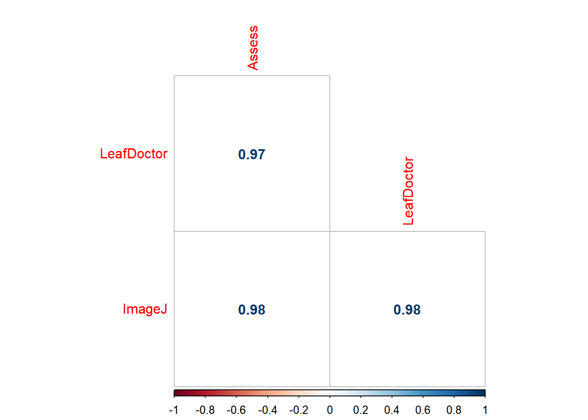
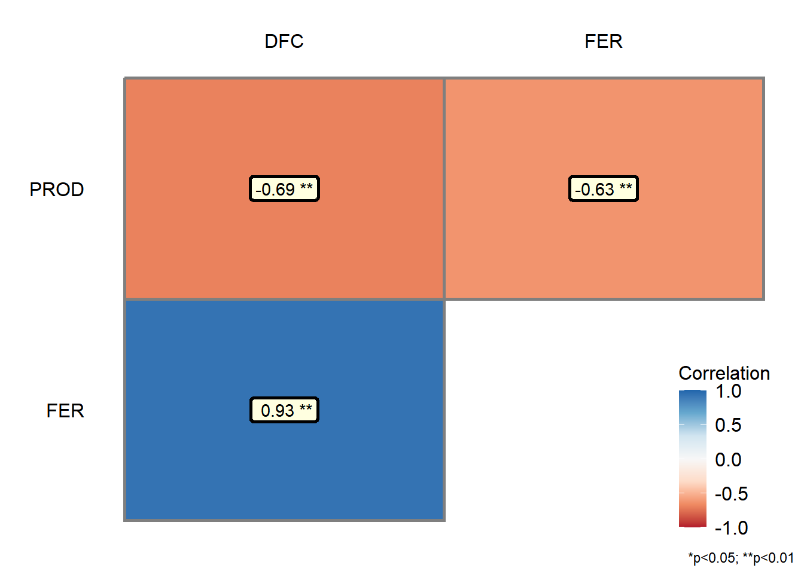
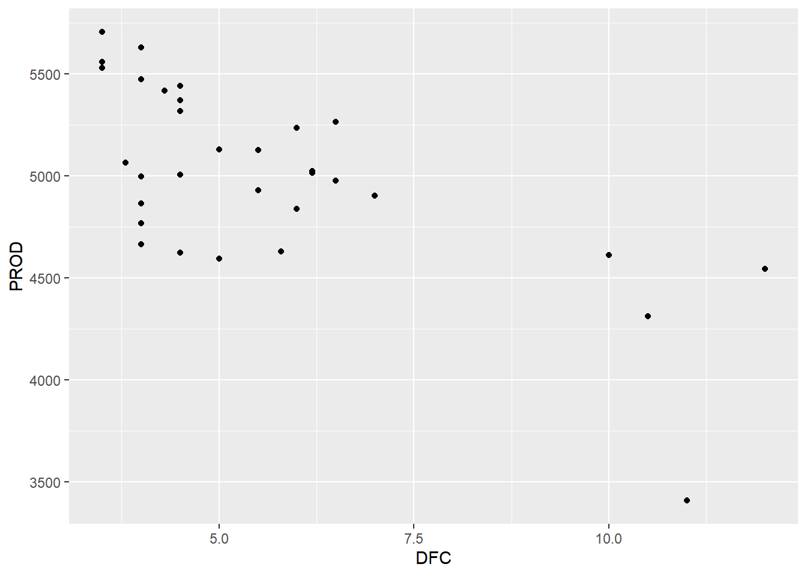

O pacote corgraph no RStudio oferece ferramentas para visualizar e analisar redes complexas. Essas redes podem representar diversas relações entre entidades, como interações entre proteínas, relações sociais em uma comunidade ou conexões entre diferentes sites na internet. O corgraph permite criar diversos tipos de gráficos de rede, como grafos lineares, grafos circulares e grafos em 3D, além de fornecer funções para calcular métricas de rede e realizar análises de rede.
Pearson's product-moment correlation
data: imgs$Assess and imgs$LeafDoctor
t = 31.119, df = 68, p-value < 2.2e-16
alternative hypothesis: true correlation is not equal to 0
95 percent confidence interval:
0.9466882 0.9792005
sample estimates:
cor
0.9666367
cor(imgs$Assess, imgs$LeafDoctor)
[1] 0.9666367
cor_imgs2 <-cor(imgs2)corrplot(cor_imgs2, method ="number", type ="lower", diag =FALSE)

dados campo
campo <-gsheet2tbl("https://docs.google.com/spreadsheets/d/1bq2N19DcZdtax2fQW9OHSGMR0X2__Z9T/edit#gid=866852711")campo2 <- campo |> dplyr::select(DFC, FER, PROD)corgraph(campo2)
Var1 Var2 cor p
2 FER DFC 0.9316978 9.864101e-15
3 PROD DFC -0.6928161 1.110652e-05
6 PROD FER -0.6258321 1.277444e-04

campo |>ggplot(aes(DFC, PROD))+geom_point()

dados do estande
estande <-gsheet2tbl("https://docs.google.com/spreadsheets/d/1bq2N19DcZdtax2fQW9OHSGMR0X2__Z9T/edit#gid=401662555")estande |>ggplot(aes(trat, nplants))+geom_jitter(width =0.1, alpha =0.5, color ="red") +facet_wrap(~ exp) +stat_summary(fun.data ="mean_cl_boot", color ="black") +geom_smooth(method = lm, se = F, color ="orange")